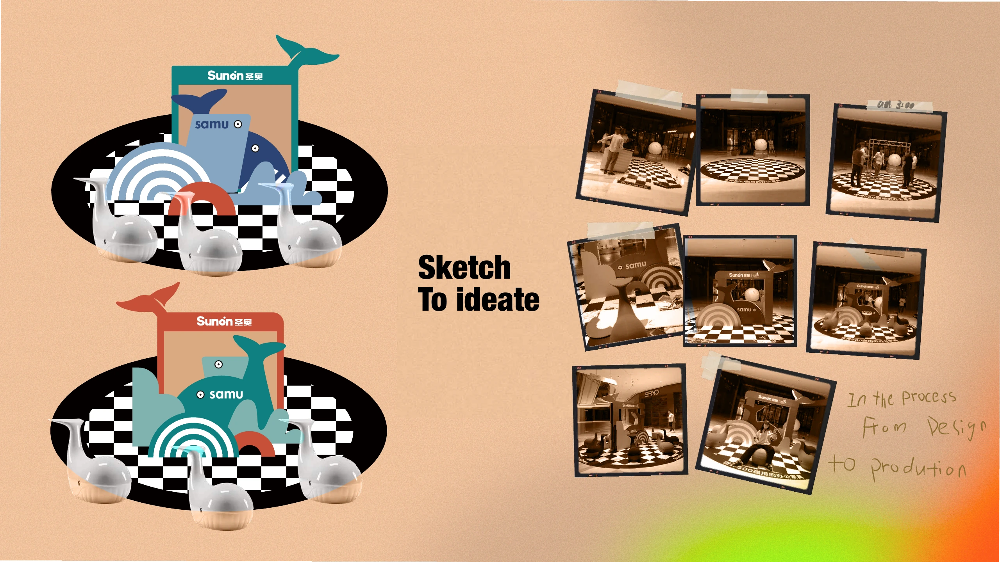

SUNON · 2020
龙湖天街商场展陈
从产品识别到现场体验
我的职责：展陈设计 · 供应商对接 · 施工跟进与现场拍摄
RETAIL DISPLAY · 2020
让产品成为
可以停留、体验的展陈。
结合龙湖天街商场周年庆，以“小鲸鱼”产品为核心设计圆形展示空间，兼顾产品识别、试坐与拍照。我独立完成展陈设计，并对接供应商、跟进施工及现场拍摄。

落地成果：展陈在商场入口建成，形成可试坐、拍照的产品体验空间，并将现场拍摄延展至后续社媒推广内容。
展陈方案与制作记录
